Maden Mühendisliği
Sahada operasyon yönetimi, iş güvenliği ve daimi nezaretçilik. Teknik süreçleri kâğıt üstünde değil, sahada öğrendim.
- Saha operasyonu
- İş güvenliği
- Daimi nezaretçilik
Mühendislikten lojistiğe, lojistikten yazılıma. Madencilik sahasında ve tehlikeli madde taşımacılığında geçen 10+ yıllık deneyimimi yazılımla birleştiriyor; sektörün gerçek problemlerine çalışan, ölçülebilir dijital çözümler üretiyorum.
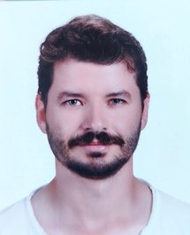
Kariyerim boyunca birbirinden uzak görünen alanlarda çalıştım. Bugün bu alanların kesişiminde ürün geliştiriyorum — çünkü sektörü bilen bir yazılımcı, problemi tarif etmek için kimseyi beklemez.
Sahada operasyon yönetimi, iş güvenliği ve daimi nezaretçilik. Teknik süreçleri kâğıt üstünde değil, sahada öğrendim.
Havayolu ve karayolu tehlikeli madde taşımacılığında güvenlik danışmanlığı. FedEx Express dahil kuruluşlarda mevzuat ve operasyon yönetimi.
Web ve mobil uygulama geliştirme, API tasarımı ve yazılım test süreçleri. Ürünü sadece yazmıyorum; test edip yayına da alıyorum.
2026'da kurduğum yazılım şirketiyle kendi ürünlerimi geliştiriyorum. Fikirden yayına kadar tüm süreci tek başıma yürütüyorum.
Profesyonel kariyerime Maden Mühendisi ve Daimi Nezaretçi olarak başladım. 2015–2019 yılları arasında madencilik sektöründe saha operasyonlarında görev aldım; teknik süreçleri, iş güvenliğini ve mevzuatın sahadaki karşılığını burada öğrendim.
2019 yılında Tehlikeli Madde Güvenlik Danışmanlığı alanına geçtim. Havayolu ve karayolu tehlikeli madde taşımacılığı alanlarında, FedEx Express dahil olmak üzere farklı kuruluşlarda görev yaptım. ADR ve IATA DGR mevzuatını yalnızca okuyarak değil, günlük operasyonun içinde uygulayarak öğrendim.
“Sektörde karşılaştığım problemlerin büyük bölümü aslında bir yazılım problemiydi. Bunu fark ettiğim gün yön değiştirdim.”
Operasyonda tekrar eden hataların, kaybolan evrakların ve elle yapılan kontrollerin önemli bir bölümünün yazılımla çözülebileceğini gördüm. Bu nedenle kendimi yazılım alanında geliştirmeye başladım: Bilgisayar Programlama eğitimi aldım, yazılım geliştirme ve test alanında sertifikalar edinerek teknik altyapımı kurdum.
2026 yılında kendi yazılım şirketimi kurdum. Tehlikeli madde güvenliği, lojistik, taşımacılık ve yazılım teknolojilerini bir araya getiren ürünler geliştiriyorum. Bugün hem sektörel deneyimimi hem de yazılım bilgimi kullanarak kendi ürünlerimi hayata geçiriyorum.
Eğitim ve iş hayatım iç içe ilerledi. Çalışırken okudum, okurken üretmeye devam ettim.
Mühendislik disiplininin ve analitik problem çözme alışkanlığının temelini attığım dönem.
Saha operasyonlarının yürütülmesi, teknik süreçlerin denetimi ve mevzuata uygunluğun sağlanması. Üretimin ve güvenliğin aynı anda yönetilmesi gereken bir ortamda sorumluluk almayı öğrendim.
Tehlikeli madde ve taşımacılık alanındaki saha deneyimimi ticaret ve lojistik teorisiyle birleştirdiğim eğitim.
Havayolu ve karayolu tehlikeli madde taşımacılığı süreçlerinde güvenlik danışmanlığı: mevzuata uygunluk, sınıflandırma, ambalajlama, etiketleme, dokümantasyon, eğitim ve iç denetim süreçlerinin yönetimi.
Yazılım geliştirme alanındaki pratiğimi akademik bir temele oturttuğum program.
Tehlikeli madde güvenliği, lojistik ve yazılım teknolojilerini birleştiren ürünler geliştiriyorum. TMGD Asistanı ve SafeCargo başta olmak üzere web platformları, taşımacılık uygulamaları ve günlük yaşam uygulamaları yayınladım.
Her projenin çıkış noktası, sahada bizzat karşılaştığım bir problem oldu. Aşağıdaki ürünlerin tamamı yayında.
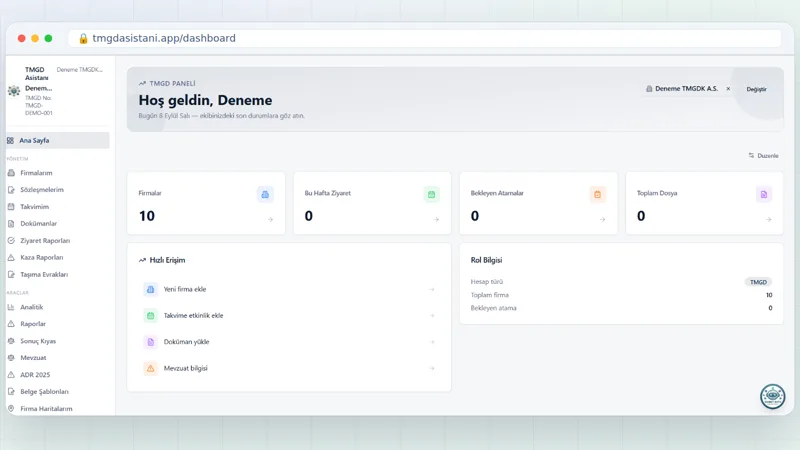
TMGD ve TMGD Kuruluşları için uçtan uca yönetim platformu. Firma–danışman atama akışı, ziyaret takvimi, belge yönetimi, otomatik hatırlatma e-postaları ve abonelik yönetimi tek panelde.
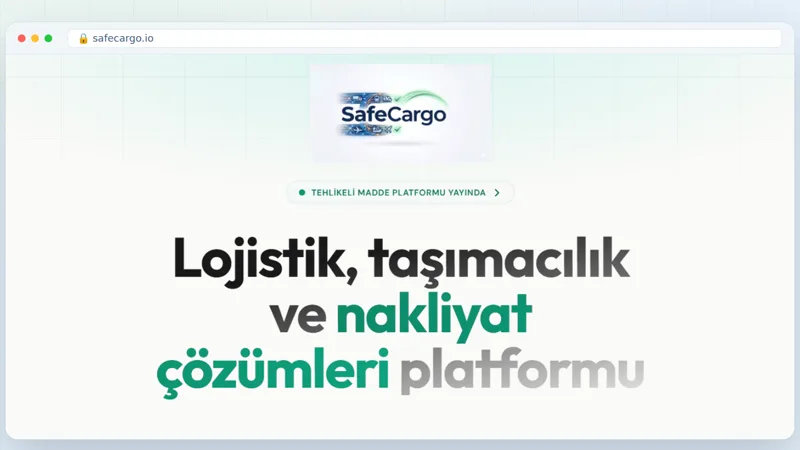
Dört taşıma modunu — ADR (karayolu), RID (demiryolu), IMDG (denizyolu) ve IATA DGR (havayolu) — tek çatı altında toplayan Türkçe tehlikeli madde mevzuat platformu.
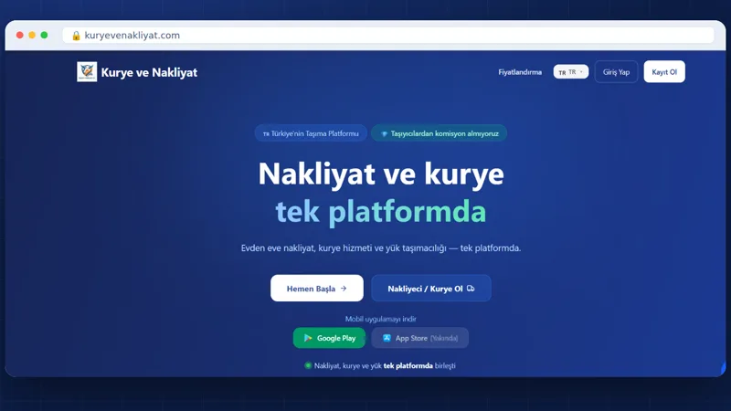
Taşıma talebi olanla taşıyıcıyı buluşturan pazar yeri. Web tarafı Next.js, mobil tarafı Expo; ikisi de aynı Supabase altyapısını paylaşıyor.
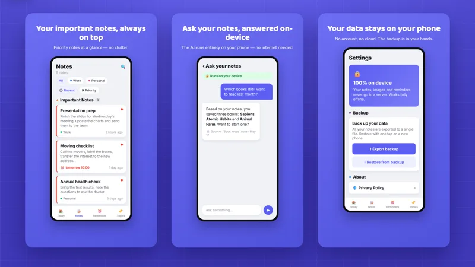
Tamamen telefonda çalışan not ve hatırlatma asistanı. Sunucu yok, hesap yok, bulut yok — veri cihazdan hiç çıkmıyor.
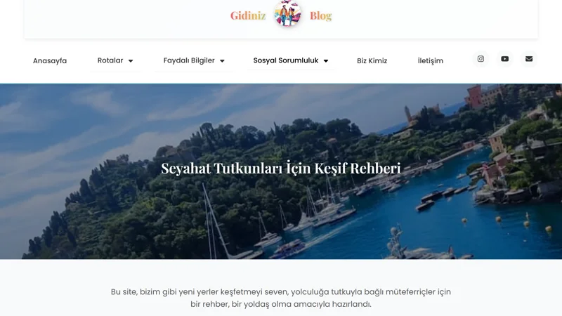
Eşimle birlikte gezdiğimiz yerleri anlattığımız seyahat rehberi. Rota önerileri, pratik seyahat bilgileri ve sosyal sorumluluk içerikleri.
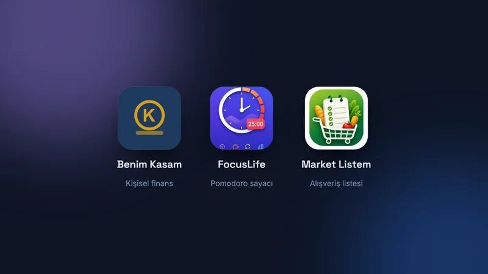
Benim Kasam, FocusLife ve Market Listem — günlük hayatta kendi ihtiyacımdan doğan, tasarımdan mağaza yayınına kadar tek başıma geliştirdiğim Android uygulamaları.
Fikirden mağaza yayınına kadar tüm süreci kendi yürüttüğüm Android uygulamaları.

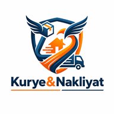
Nakliye, kurye ve yük taleplerini birkaç dokunuşla oluşturup taşıyıcılardan teklif toplayan mobil platform.

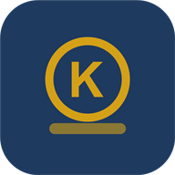
Kişisel kayıtların ve hareketlerin şifreli biçimde saklandığı, cihazlar arası QR ile eşleşen dijital kasa.

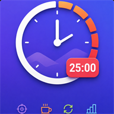
Kategori bazlı süreler, arka planda şaşmayan geri sayım ve günlük odak istatistikleri sunan Pomodoro zamanlayıcısı.

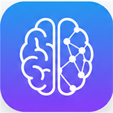
Sunucusuz çalışan not ve hatırlatma asistanı: cihaz üstünde LLM, çevrimdışı OCR ve sesle dikte.

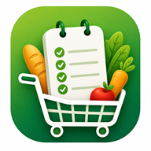
Listeleri link ile paylaşıp gerçek zamanlı ortak düzenleyen, harcamaları kaydedip kıyaslayan alışveriş uygulaması.
Aşağıdaki teknolojilerin tamamı, yayında olan projelerimde fiilen kullandıklarım — liste doldurmak için eklenmiş tek bir kalem yok. Yazılım tarafında yalnızca geliştirme değil, test ve kalite güvence tarafında da çalışıyorum; bu ikisini birlikte yürütebilmek, tek başına ürün çıkarmanın en kritik parçası.
Tüm projelerimin arayüzü React ve TypeScript üzerine kurulu.
Supabase üzerinde Postgres, kimlik doğrulama ve gerçek zamanlı veri.
Google Play’de yayında olan 5 uygulamayla sahada kanıtlanmış.
ISTQB ve SDET sertifikalarının pratikteki karşılığı: her projede test katmanı var.
Hem bulut LLM’leri hem tamamen cihaz üzerinde çalışan modeller.
Fikirden mağaza yayınına kadar tüm zinciri tek başıma yürütüyorum.
Yazılım geliştirme ve test alanındaki teknik altyapımı belgeleyen sertifikalar.
Yazılım test süreçleri, test prensipleri ve kalite güvence alanındaki uluslararası geçerliliği olan temel yetkinlik sertifikası.
Yazılım geliştirme ve test süreçlerini bir araya getiren, test otomasyonuna odaklanan SDET eğitimi.
Frontend ve backend teknolojilerini birlikte kapsayan, uçtan uca web geliştirme eğitimi.
Yazılım test süreçlerine giriş, temel test prensipleri ve test yaşam döngüsü eğitimi.
Proje, danışmanlık veya iş birliği — hangi konu olursa olsun yazabilirsiniz. Genellikle aynı gün içinde dönüş yapıyorum.
Tehlikeli madde, lojistik ya da tamamen farklı bir alanda olsun — probleminizi anlatın, birlikte çözüm üretelim.